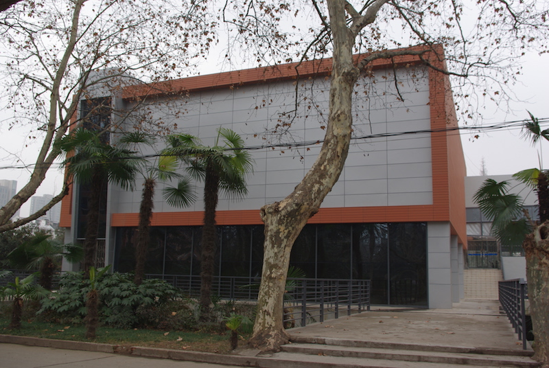
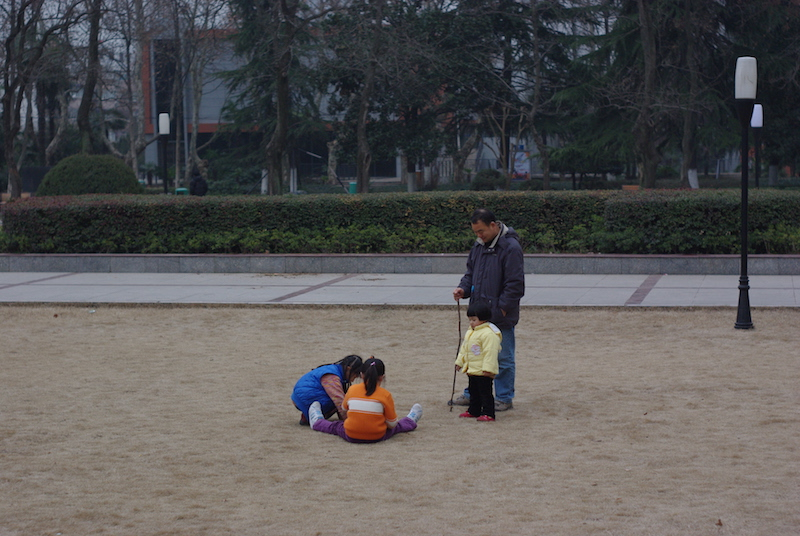

其实老早就注册twitter了，不过一直没怎么使用，加上后来功夫网把他河蟹掉，就更加没怎么关注了。
最近发现闲的时候很无聊，遂重新打起混twitter的注意，翻出来去年Fenng列出来的一份值得follow的twitter用户列表挨个加上，加上Firefox的twitter插件Echofon，这下应该可以及时了解各种八卦了吧。
我的推@imsizon，欢迎follow，需翻墙
利用闲闲散散的时间终于把博客用python重新实现完了，这页面加载速度，真是让人泪流满面。log中看到的首次页面加载时间从原来的10+s降到了现在的1s左右，cpu时间消耗自然是大幅降低，另外gae python对静态文件配置的支持要比gae java好不少，可以指定文件的过期时间，可以进一步降低对服务器的资源消耗提高页面二次访问速度。这下估计每天访问量上到5000+（2010-03-01update：根据dashboard的资源消耗统计数据计算看可以支持50000+request/day，平均每个页面5个request的话也可以支撑10000+页面访问了），应该都不需要额外购买google的服务器配置了，购买虚拟主机的计划就往后搁置一下吧，估计上半年也没太多时间打理。
凌晨的比赛国米终于坚挺了一把，2：1把车仔拿下，真是让内拉祖里们内牛满面呐，希望下回合客场能继续保持本场的防守水准和反击效率。曾哥的禁区内扣球过人射门简直是如臻化境，屡试不爽了现在，看来以后得以信曾哥为主了。
年会之前有两天空闲，在宾馆没什么事情就晃悠回科大看看，因为假期加上天气的原因，路上几乎没什么人走动，整个校园静悄悄，俺就这么偷偷潜入鸟。
刚进大门没多会儿俺就小吃一惊，国庆回去的时候还只见二教装修，几个月不见又有大变化了。首先是东区图书馆要改建，整个成了一工地，孺子牛雕塑也不得不搬家了：
搬家后的孺子牛，后面依稀可见蓝色的工棚，眼尖的同学可能发现后面的宿舍楼窗口多了样东西，嗯，现在不只有暖气，空调也给安上了，羡慕学弟学妹们……
改建的不止图书馆，曾经的桃李苑餐厅现在成了一堆废墟，不知道是要重建还是拿这块地转作他用：
想当年大一的时候，桃李苑一楼的炒菜可是很受欢迎，尤其是肉末茄子，宿舍4人经常人手一份，最多的时候见过大师傅要一锅炒8份才能忙得过来的情况，可惜换师傅之后味道差了，价格还死贵，不得已转战星座炒饭和东苑餐厅去也。哦，差点忘了炒菜隔壁的福建大妈，他们家的混沌、肉丝面还有莆田肉蒸饭也是晚饭和夜宵的好选择，现在不知人在何方了……
二教重新装修之后墙漆的颜色貌似向一教看齐了，看起来比原先要要时尚不少：
紧挨着二教的水上报告厅自然也不能落后：

傍晚了，小盆友们在家长的陪同下也开始跑出来玩耍了：

ps：实在太懒，拖了半个月才把照片整理出来，再拖下去照片估计就烂硬盘里了
中午在Gracecode看到这么一篇文章《Mac下禁用CNNIC CA证书》，才知道有这么一件事情。
Firefox可以参照链接文章里的说明设置，ie和chrome的设置比较类似，证书管理界面都长得几乎一模一样，而且貌似只能把Entrust.net的证书删除，不能像Firefox那样设为不信任站点。不过为了防止影响正常网站的使用，ie和chrome的证书我暂时没动，对信息隐私要求比较高的时候就用Firefox吧。